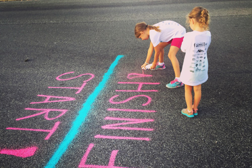

Weather Forecast
Soda Springs Sprint 5k

St. Luke's FitOne announced that is offering two race options for
2021. Runners and walkers can choose either to participate in-person
or virtually. Registration for both versions kicks off June 30.
St. Luke's FitOne offers three race choices - a 5k, 10k and Half
Marathon - that takes place in Boise every September. It is the
largest one-day fitness event in Idaho and draws more than 12,000
participants every year. It also serves as an important fundraiser for
St. Luke's Children's Hospital.
"The community's health and safety remain a top priority during
COVID-19, and we recognize that people are eager to get back to some
of the fun events they love, St. Luke's FitOne designed two options to
match participants' comfort levels," said St. Luke's Director Eric
Stride.
The in-person celebration will take place on Saturday, Sept. 25 in
downtown Boise and will be a scaled-down version of past events.
Organizers say the number of race day participants will be limited to
6,350 people to ensure proper health and safety protocols can remain
in place to protect racers, volunteers, staff and sponsors.
The registration totals are capped per distance: 5K at 3,400, 10K at
1,750 and half marathon at 1,200. Rolling start times and spaced-out
waves will ensure people can maintain a safe physical distance.